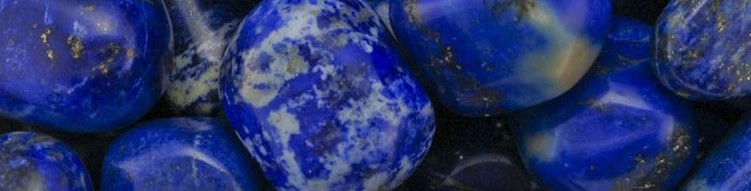

LAPISLÁZULI: poderes y usos
El lapislázuli es realmente una mezcla entre lazulita, calcita y pirita. Pertenece al sistema isométrico y está clasificada dentro del grupo de los silicatos. Pertenece al grupo de la sodalita y la encontramos como mineral de contacto metamórfico.

Su nombre procede de la composición del latín “lapis” y del persa “lazhward” que
significan azul. 3000 años antes de Cristo, los faraones egipcios utilizaban la piedra
de lapislázuli para fabricar amuletos con forma de ojo y objetos simbólicos como los
escarabajos. Los faraones y los miembros de la familia real utilizaban el lapislázuli en
sus máscaras funerarias y otros símbolos de riqueza como joyas, colgantes de lapislázuli,
etc. Para los egipcios, el lapislázuli era un símbolo de fuerza, poder y valor divinos.
Asociaban el color azul con la inmortalidad y el infinito. Por eso colocaban esta piedra
dentro de las tumbas, para proteger al difunto y acompañarlo en la muerte.
Los sacerdotes a menudo teñían sus prendas con pintura de lapislázuli para solidificar
su condición de dioses, vistiendo ese color. También se usaba en rituales religiosos y
exorcismos. La piedra se pulverizó y se mezcló con oro y la mezcla se colocó sobre la
cabeza del individuo afectado. A medida que la cataplasma se secaba, atraería a los
demonios. El lapislázuli también fue el material mas usado para los amuletos.
La leyenda dice que el rey Salomón recibió la posesión de un anillo de lapislázuli por
parte de un ángel. Este anillo le permitió controlar un ejército de demonios, que usó
para construir su templo.
En Roma antigua, se creía que el lapislázuli era un poderoso afrodisíaco. Representaba
el amor, la paz y la alegría. Se molia en polvo y se mezclaba con líquidos para usar
como compresa para aliviar emociones negativas, extraer impurezas espirituales, y
energizar el chakra de la garganta.En muchas culturas las gemas de lapislázuli simbolizaban
la realeza y la gran riqueza.

Poderes del lapislázuli
A pesar de las diferencias entre las culturas antiguas, todas tenían en gran estima el lapislázuli y generalmente le otorgaban la misma designación como un objeto poderoso y espiritual. Es considerada como la piedra de la comunicación,está íntimamente relacionada con la voz y la garganta, y se dice que dará confianza a quien la lleva y estimulará su poder de palabra.
Además esté vinculada al ojo frontal o tercer ojo, lo que permite ampliar la visión del mundo y actuar sobre la intuición, la clarividencia y la paz interior. Cuando se encuentra en desequilibrio se manifiesta un complejo de inferioridad o de superioridad, que son fruto del miedo, la timidez o la falta de confianza.
También es una piedra protectora que contacta con los espíritus guardianes. Reconoce el ataque,
bloqueándolo y devolviéndolo a su origen. Armoniza los niveles físico, emocional, mental y espiritual,
aportando un profundo conocimiento interno cuando están equilibrados.
Es un poderoso amplificador del pensamiento, aporta claridad y objetividad. Anima a la creatividad y
ayuda a afrontar la verdad. Ideal colocarlo sobre el tercer ojo o sobre la garganta. Debe colocarse
también sobre el diafragma o en cualquier lugar entre el esternón y la parte alta de la cabeza para
que pueda realizar de una forma correcta su función.
La piedra lapislázuli también es conocido por eliminar las tensiones mentales. Si es una persona
tímida por naturaleza, puede ayudarle a expresarse con más espontaneidad, sin miedo a la mirada de
los demás. Esta facilidad de comunicación mejora la calidad de las amistades, la familia y las
relaciones amorosas. Delante de los que le rodean, e incluso de los desconocidos, podrá expresarse
con claridad y defender sus opiniones, manteniendo la calma y la atención.
A nivel curativo, ayuda al buen funcionamiento de los ojos. En general, las cefaleas, los trastornos
del sueño y los dolores de cabeza están muy relacionados con la fatiga visual. Asociado al elemento
Agua, el lapislázuli tiene un efecto positivo sobre los riñones y la vejiga. Regula el sistema
digestivo y alivia los dolores asociados al ciclo menstrual. Por último, se sabe que los minerales
del lapislázuli contribuyen a la salud de los músculos y los huesos.
Usos del citrino
- Si desea llevar una piedra lapislázuli, le aconsejamos que la lleve a la altura de la garganta, ya que es la piedra de la comunicación. Por ello, un collar de lapislázuli es perfectamente adecuado. Lo ideal es que se lleve entre la parte superior de la cabeza y el esternón, es decir, justo por encima del diafragma.
- Alivia considerablemente los dolores de cabeza. Cuando surja la necesidad, puede colocar la piedra directamente en la frente para obtener un alivio rápido.
-
El lapislázuli también combate los trastornos del sueño y la sensación de mareo. Para disfrutar
de un sueño profundo y reparador, los insomnes pueden colocar un lapislázuli en su dormitorio,
bajo la almohada o en la mesilla de noche. El lapislázuli facilita la respiración y tiene
muchos beneficios para todo el sistema nervioso y ORL.
Tuedes posicionar tu cuarzo en la garganta o entre tus dedos de modo que se encuentre en contacto directo con tu piel, esto hará que su fuerza mística llegue a tu vida y a tu cuerpo. -
Si tienes presión en el pecho puedes coger la priedra o la joya y ponertela en el pecho, tumbate y
cierra los ojos, luego has 10 respiraciones lentas y profundas, y notarás como irá desapareciendo
la presión.
Para potenciar las riquezas en tu vida puedes colocar el citrino en uno de los rincones en tu casa, de tu oficina, de tu empresa, de tu negocio, de tu kiosco o en lo que sea que tengas para manejarte en el mundo económico. Esto hará que cada día desprenda un poco de su energía y aumenta las posibilidades de éxito.
Cómo limpiar el citrino
El lapislázuli es una piedra frágil que requiere un cuidado especial. Para preservar sus poderes y su intenso color azul, debe recordar purificarlo y recargarlo regularmente. Para ello hay que seguir los siguientes pasos:
- Coloca la piedra cuarzo rosa en un envase de vidrio.
- Tapa la piedra con agua destilada o de manantial.
- Déjala actura durante unas horas bajo la luz de la luna
- Evite la sal, el agua caliente o del grifo, ya que pueden debilitar su piedra prematuramente.
- Si la coloca sobre un cúmulo de cuarzo o sobre una geoda de amatista mientras realiza la limpieza, los poderes del ágata se multiplicarán por diez.
- Puede realizar estos rituales de limpieza y recarga una vez al mes o una vez a la semana, dependiendo de cómo se sienta y de la frecuencia con la que lleve la piedra.
Resumen
- Ayuda a superar el miedo, la fatiga y la tristeza.
- Elimina las presiones del cuerpo y la mente.
- Favorece el equilibrio de cuerpo y mente.
- Favorece la intuición, clarividencia y la paz interior.
- Ayuda a abrir el tercer ojo.
- Cura los problemas de salud.
- Elimina la timidez, ofrece confianza.
- Amuleto de protección.
- Ahuyenta los miedos.
- Transmuta y elimina la energía negativa.
- Favorece las relaciones amorosas, de amistad...
- Te abre tu lado espiritual.
- Puedes llevarla suelta, como joya (colgante, anillo, pulsera...) o puedes dejarla en un ambiente.
- Se limpia con agua y sal, dejándola debajo de la luz del sol unas horas.